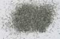

|
|
(For further information on spectroscopy, see:
http://speclab.cr.usgs.gov)
TITLE: Holmquistite HS291 Amphibole DESCRIPT
DOCUMENTATION_FORMAT: MINERAL
SAMPLE_ID: HS291
MINERAL_TYPE: Inosilicate
MINERAL: Holmquistite (Amphibole group)
FORMULA: Li2(Mg,Fe+2)3Al2Si8O22(OH)2
FORMULA_HTML: Li2(Mg,Fe+2)3Al2Si8O22(OH)2
COLLECTION_LOCALITY: Quebec
ORIGINAL_DONOR: Hunt and Salisbury Collection
CURRENT_SAMPLE_LOCATION: USGS Denver Spectroscopy Laboratory
ULTIMATE_SAMPLE_LOCATION: USGS Denver Spectroscopy Laboratory
SAMPLE_DESCRIPTION:
Forms series with Ferroholmquistite and Magnesioholmquistite_
Dimorphous with Clinoholmquistite.
"I-20 Holmquistite 291B--Quebec, Li2(Mg,Fe2+)3(Al,
Fe3+)2(Si8O22)(OH,F)2): Holmquistite is a rare
amphibole, the main occurrences of which are located at or close to the
contact between lithium-rich pegmatites and country rocks. There are
broad general absorption bands in the spectrum of this sample centered
near 0.7 and 1.0µ due to Fe3+ and Fe2+. The weak OH feature
near 1.4µ is accompanied by a considerably stronger OH band at
2.35µ. As in the cases of the tremolite and riebeckite above, the
additional strength and slight positive shift of the 2.35µ band is due
to a small contribution from a carbonate contaminant. The low reflectivity and
poorly defined bands are a result of the presence of opaque magnetite and pyrite
as impurities."
Sieve interval 74 - 250µm.
Hunt, G.R., J.W. Salisbury, and C.J. Lenhoff, 1973, Visible and near-infrared spectra of minerals and rocks: VI. Additional silicates. Modern Geology, v. 4, p. 85-106.
IMAGE_OF_SAMPLE:

END_SAMPLE_DESCRIPTION.
XRD_ANALYSIS:
40 kV- 30 mA, 7.0-9.5 keV
File: holmq291.out, -.mdi
References: Huebner's reference patterns
Found: K-mica, orthoamphibole, minor chlorite and K-feldspar, trace quartz
Comment: Peaks are sharp; the constituent minerals appear well-crystallized
and compositionally homogeneous. The amphibole has lattice spacing's consistent
with the characteristic cell dimensions of holmquistite. Not all peaks were
indexed; a fifth phase may be present.
END_XRD_ANALYSIS.
COMPOSITIONAL_ANALYSIS_TYPE: None # XRF, EM(WDS), ICP(Trace), WChem
COMPOSITION_TRACE:
None
COMPOSITION_DISCUSSION:
None
END_COMPOSITION_DISCUSSION.
MICROSCOPIC_EXAMINATION:
Sample is very contaminated with:
Mode:
40 vol% Anthophyllite ? biaxial (-), parallel extinction
40 vol% Plagioclase (altered to sericite?)
17 vol% quartz (uniaxial +)
3 vol% Holmquistite (light blue color in plane light)
If Holmquistite is the light blue amphibole with parallel extinction and amphibole cleavage (biaxial -), then this mineral only forms 3 vol% of the contents of this bottle. I suggest sample be X-rayed to see if green amphibole is the Holmquistite or anthophyllite. If the green amphibole turns out to be Holmquistite, then it may be separated using heavy liquids or Franz separator. If blue mineral is Holmquistite then these separation procedures will probably not give enough Holmquistite to make the effort worthwhile.
END_MICROSCOPIC_EXAMINATION.
SPECTROSCOPIC_DISCUSSION:
END_SPECTROSCOPIC_DISCUSSION.
SPECTRAL_PURITY: 1d2d3d4_ # 1= 0.2-3, 2= 1.5-6, 3= 6-25, 4= 20-150 microns
| LIB_SPECTRA_HED: | where | Wave Range | Av_Rs_Pwr | Comment |
|---|---|---|---|---|
| LIB_SPECTRA: | splib04a r 2164 | 0.2-3.0µm | 200 | g.s.= |
| LIB_SPECTRA: | splib05a r 3320 | 0.2-3.0µm | 200 | g.s.= |
| LIB_SPECTRA: | splib06a r 9899 | g.s.= | ||
| LIB_SPECTRA: | splib06a r 9912 | g.s.= |
{kind=link}